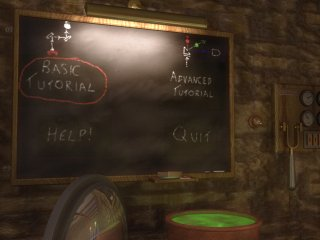
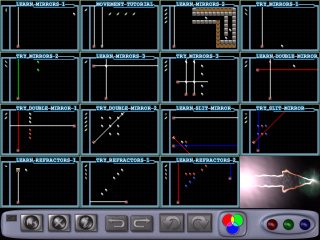

A default player has already been created for you so all you need to do to start is press the play button shown in the image below.

Press 'Play Aargon' to start the game!
The next screen you will see is the "Level Set" selection screen where you can choose which levels you want to play. Each level set is represented by a yellowish button with a description. To begin playing, simply click on one of the buttons.

Press "Dr. Mindtwister's Laser Lecture" to start the Tutorial.
If it is your first time playing Aargon Deluxe, we suggest that you have a look at "Dr. Mindtwister's Laser Lecture". In here, you will learn the basics about playing the game as well as have a chance to try out some of your new-found skills. Note that, you do not need to review the whole "lecture" before starting the game. After clicking on "Dr. Mindtwister's Laser Lecture", you will be taken to the Aargon Deluxe "Dungeon Classroom" shown below. There are two levels of lessons, Basic and Advanced. Click on the chalkboard to select which lesson set you wish to review.

Click "Basic Tutorial" to view the basic lessons.
If you are reviewing the basic tutorial you will see a set of thumbnail sized "Lesson Levels". Click on any lesson to begin learning.

Click any lesson to start!
You will now be learning the game. Enjoy!